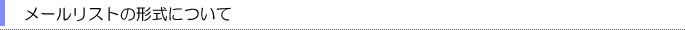
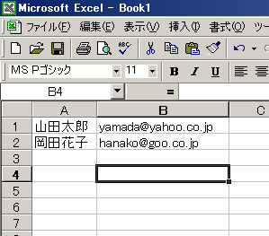
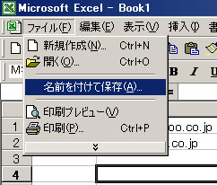
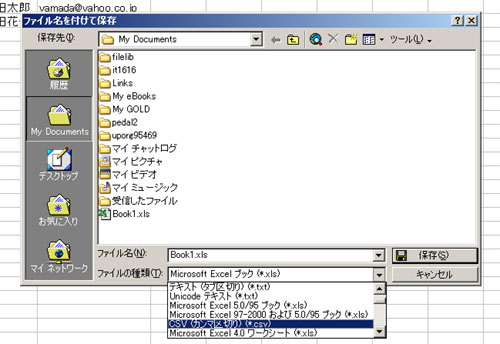
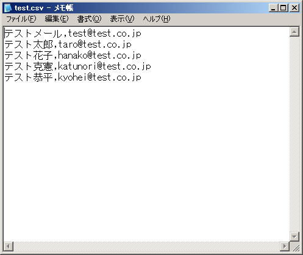

|
|
|
|
|
|  |
メールリストはＣＳＶ形式のファイルになります。
名前,(半角カンマ)メールアドレス の形式で保存してください。
※ OutlookやOutlookExpressといったメールソフトのメールリストからも作成することが出来ます
詳しくは、
「OutlookからＣＳＶファイルを作る方法」
または、
「OutlookExpressからＣＳＶファイルを作る方法」
をご覧ください。
エクセルからＣＳＶを作る方法
１、エクセルで「名前」「メールアドレス」の順番にリストを作成していきます。

※メールアドレスだけの場合も、Ｂの列にアドレスを入力してください。
２、リストが作成し終わったら、「ファイル」の「名前をつけて保存」を選びます。

３、「ファイルの種類」から「ＣＳＶ（カンマ区切り）（*.csv）」を選び、保存を押します。

４、出来上がりです。
このようなアイコンのＣＳＶファイルが出来れば成功です。

※ＯＳやエクセルのバージョンにより若干方法が異なる場合があります。
■参考 ＣＳＶファイルはメモ帳でも編集できます。
メモ帳で開けなかった場合はＣＳＶの変換に失敗している場合があります。↓

メールリストのサンプルをここからダウンロードできます。（右クリックで対象をファイルに保存）
OutlookやOutlookExpressといったメールソフトのメールリストからも作成することが出来ます。
詳しくは、
「OutlookからＣＳＶファイルを作る方法」
または、
「OutlookExpressからＣＳＶファイルを作る方法」
をご覧ください。 |
|
|
|
|